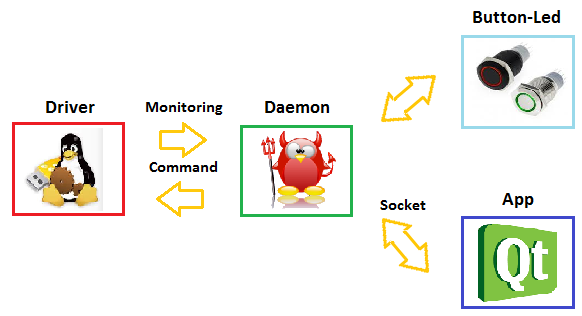

Mini-Project¶
In this project we have the task to create a system made of 3 software:
- A kernel driver
- A daemon application that uses the driver
- A client that controls the daemon
The kernel driver enable to read the CPU temperature and to drive the CPU’s fan using PWM. It has also two mode. One is manual mode, where an user-land application can control the fan speed. In the seconde “automatic” mode, the kernel module drives the fan speed according the readen temperature.
The dameon application uses the interface provided by the kernel driver to manage it. In addition, the dameon appicion can be controller in two way: by an application that comunicate with it using IPC or directly by the hardware of the Odroid. The button and led can be used to change the mode and to set the fan speed in manual mode.
The client application can do exacly the same task that the button but can also read the system status.
Kernel Driver¶
The kernel driver uses sysfs as a interface as it is easyer to read & write some simple parameter as we will have in this application. We are not making heavy data-exchange that whould requires a stream or memory interface.
It will run a thread to handle the temperature read-out and to implement the automatic mode. It will also drives the PWM.
The driver will expose 3 variables to the user application:
duty: Current duty cycle (read/write, read only in auto mode) mode: Current working mode, auto or manual temp: Current CPU termperature.
The kerenel module will uses the following data structre to handle its internal state:
struct fan_ctrl_t{
char mode[100];
int duty;
int temp;
struct pwm_device* pwm;
};
static struct fan_ctrl_t fan_ctrl_var = {
.mode=MODE_AUTO,
.duty = 20,
};
Sysfs inteface¶
The driver paramters will be materialized in the sysfs structure by the following files:
- duty:
/sys/devices/platform/fan-ctrl/duty- mode:
/sys/devices/platform/fan-ctrl/mode- temp:
/sys/devices/platform/fan-ctrl/temp
This is realized in the code by declaring them as a device attributes:
DEVICE_ATTR(mode, 0660, fan_ctrl_show_mode, fan_ctrl_store_mode);
DEVICE_ATTR(duty, 0660, fan_ctrl_show_duty, fan_ctrl_store_duty);
DEVICE_ATTR(temp, 0440, fan_ctrl_show_temp, NULL);
And then in the module initialization function, a sysfs driver is declared and the access files are created:
static void sysfs_dev_release(struct device * dev) {}
static struct platform_driver sysfs_driver= {
.driver = {.name = DRIVER_NAME,},
};
static struct platform_device sysfs_device = {
.name= DRIVER_NAME,
.id = -1,
.dev.release = sysfs_dev_release
};
static int __init skeleton_init(void)
{
int status = 0;
//sysfs register driver+device and add devices attributes
if (status == 0)
status = platform_driver_register(&sysfs_driver);
if (status == 0)
status = platform_device_register(&sysfs_device);
if (status == 0)
{
device_create_file(&sysfs_device.dev, &dev_attr_mode);
device_create_file(&sysfs_device.dev, &dev_attr_duty);
device_create_file(&sysfs_device.dev, &dev_attr_temp);
}
// ....
}
For each attribute there is a read & write function. Those are not detailed here, as they are prety straitforaward. They just made type convertion and value checking.
Thread¶
The thread is created from the module initialization fuction:
static int __init skeleton_init(void)
{
// ...
fan_ctrl_task = kthread_run(fan_ctrl_thread, &fan_ctrl_var, "fan-ctrl thread");
if(fan_ctrl_task == NULL)
{
pr_err("Unable to start fan-ctrl thread.\n");
return 1;
}
// ...
}
The thread initizaile the PWM output before entering the main loop:
int fan_ctrl_thread(void* data)
{
int i;
int temp_work;
int ret;
int duty_ns;
// get the passed parameters
struct fan_ctrl_t* state = (struct fan_ctrl_t*)data;
// Enable PWM
ret = pwm_enable(state->pwm);
if(ret)
{
pr_err("Error enabling PWM output\n");
}
// Initial seting of pwm
duty_ns = (PERIOD_NS * state->duty) / 100;
ret = pwm_config(state->pwm, duty_ns, PERIOD_NS);
if(ret)
{
pr_err("Error setting PWM output\n");
}
while(!kthread_should_stop())
{
// ...
}
}
In the main loop makes tree tasks:
- Read the CPU temperature
- Compute the required fan speed, if in auto mode
- Update PWM output
When this sequence is done, it sleeps for half a second and then restarts.
The CPU has many “Thermal zone”, we need to agredate the global CPU temerature simply by selecting the maxiumum temperature:
// get the maxiumum temperature of the CPU
state->temp = -50000;
for(i = 0; i< sizeof(th_zones); i++)
{
thermal_zone_get_temp(thermal_zone_get_zone_by_name(th_zones[i]), &temp_work);
state->temp = MAX(state->temp, temp_work);
}
The management of the fan speed, for the auto mode is done as following:
// Do we are in auto mode ?
if(strcmp(state->mode, MODE_AUTO) == 0)
{
// Change the duty accoring the temperature
if( state->temp < 57000 )
state->duty = 0;
else if( state->temp < 63000 )
state->duty = 20;
else if( state->temp < 68000 )
state->duty = 50;
else
state->duty = 100;
}
The PWM duty-cycle is then update:
// Update PWM output
duty_ns = (PERIOD_NS * state->duty) / 100;
ret = pwm_config(state->pwm, duty_ns, PERIOD_NS);
if(ret)
{
pr_err("Error setting PWM output\n");
}
Finaly, the threads sleep for a second.
// Sleep for half a second
msleep(500);
PWM ouput¶
The PWM output drives the CPU’s fan speed. To use the PWM output, it first need to be requested from the module initialization function:
static int __init skeleton_init(void)
{
// ...
fan_ctrl_var.pwm = pwm_request(0, DRIVER_NAME);
// ...
}
The rest of the PWM initilsation is done in the beginning of the thread code:
// Enable PWM
ret = pwm_enable(state->pwm);
if(ret)
{
pr_err("Error enabling PWM output\n");
}
// Initial seting of pwm
duty_ns = (PERIOD_NS * state->duty) / 100;
ret = pwm_config(state->pwm, duty_ns, PERIOD_NS);
if(ret)
{
pr_err("Error setting PWM output\n");
}
It should also be released when the module is unloaded:
static void __exit skeleton_exit(void)
{
kthread_stop(fan_ctrl_task);
pwm_free(fan_ctrl_var.pwm);
//...
}
Daemon¶
Introduction This project is to realize a Daemon that communicate with the driver and the application. For the communication with the driver, the sysfs communication will be used and for the application, we decided to use an ip linux socket as IPC.
Overview The program communicate with the driver, it can set the duty cycle (0 to 100) value and change the mode (auto or manual). The temperature can be read (RO) from the driver.
The button on the board change the mode, and the fan speed. An application communicate through socket to interact with the daemon is implemented. All datas are passed to the driver through the daemon application, as shown in the following image.
Board interaction¶
The user can user 3 switch on the extension board to change the mode and control the speed of the fan.
- The first button SW1 switch the mode between auto and manual.
- The second button SW2 increase 10% the fan speed on manual mode otherwise in auto mode do nothing
- The button SW3 does the same as SW2 but decrease 10% the speed fan.
Socket interaction¶
The fan speed can be change and set from a remote socket connected to this daemon. The protocol implemented is the following:
mode=[auto,manual]: to change the mode in the mode specified by a string end line terminated. duty=[0-100]: to change the duty cycle, can be a value from 0 to 100 show: to display the current settings in this format mode[],duty[],temp[] help: show this help
Explication¶
The daemon program is divided in five parts as follow:
- Initialize the daemon
- Initialize the communication with GPIO (LED,SWITCH), the driver, the server(port=8080), timer
- Set the default states (mode=auto, duty=50)
- Create EPOLL loop
- Start forever in the event loop
All the following part are synchronized in the EPOLL loop.
Daemon¶
The initialize of the daemon the process is the following
- fork off the parent process
- create new session
- fork again to get rid of session leading process
- capture all required signals
- update file mode creation mask
- change working directory to appropriate place
- close all open file descriptors
- redirect stdin, stdout and stderr to /dev/null
- option: open syslog for message logging
- option: get effective user and group id for appropriate’s one
- option: change root directory
- option: change effective user and group id for appropriate’s one
- launch the body function
The creation of the daemon is done in the main function then it calls the body function that run the program.
GPIO¶
The following function open a gpio in which direction is passed in parameter. Then for the led the direction should be in output and for the button in input:
static int open_gpio(char* pin, char* direction)
Driver¶
The communication with the driver is by SYFS, then the only things to do is to open the following filedescriptor in the program and the communication is bidirectional, thanks to the last parameter.
int fmode = open("/sys/devices/platform/fan-ctrl/mode",O_RDWR);
int fduty = open("/sys/devices/platform/fan-ctrl/duty",O_RDWR);
int ftemp = open("/sys/devices/platform/fan-ctrl/temp",O_RDONLY);
Server¶
The server is listening on port 8080, by these two function the server listen and accept connection in a non-blocking state:
int make_socket_non_blocking (int sfd)
int create_and_bind (char *port)
The following part of code create the server and make the server socket non-blocking. In this mode the program can continue to run even if no client is connected.
int sfd = create_and_bind ("8080");
if (sfd == -1)
exit(-1);
ret = make_socket_non_blocking (sfd);
if (ret == -1)
exit(-1);
ret = listen (sfd, SOMAXCONN);
if (ret == -1){
perror ("listen");
exit(-1);
}
Timer¶
The timer is started when a user button is pressed and cleared after a while. Then reset the led state. Its reset if the button is pressed while the downcount.
timfd = timerfd_create(CLOCK_MONOTONIC, TFD_CLOEXEC);
its.it_value.tv_sec = 0;
its.it_value.tv_nsec = 400000000;
its.it_interval.tv_sec = 0;
its.it_interval.tv_nsec = 0;
Each 400ms the leds are shutdown, when they light up.
Application¶
The client application comunicate with the dameon using a TCP socket. It implement the user iterface to it in a simple comand line style. They are five commands:
help: Show this message & exit mode [auto|manual]: Set the control mode duty [0-100]: Set the duty-cycle show: Show current temperature, duty and mode exit: Exit this application
Here is a demo session:
# /usr/workspace/fan-ctrl-client
Fan controller remote-control
=============================
Commands are:
help : Show this message & exit
mode [auto|manual] : Set the control mode
duty [0-100] : Set the duty-cycle
show : Show current temperature, duty and mode
exit : Exit this application
> show
mode=[manual],duty=[20],temp=[41]
> duty 60
Duty Cycle changed to 60
> show
mode=[manual],duty=[60],temp=[41]
> duty 90
Duty Cycle changed to 90
> show
mode=[manual],duty=[90],temp=[41]
> mode auto
auto
> show
mode=[auto],duty=[90],temp=[41]
> exit
Bye!
#
Deamon communiction¶
To open the communication with to the deamon, as socket is opened and the file descriptor associated is stored globaly (to be accessed by the other function). The daemon waits for connection on TCP port 8080. So we must connect the socket to the “localhost” to that port:
static int socket_fd;
// ...
int open_socket()
{
// Socket address
struct sockaddr_in serv_addr;
// Host name
struct hostent *server;
// Create a socket file descriptor
int sockfd = socket(AF_INET, SOCK_STREAM, 0);
if (sockfd < 0)
{
fprintf(stderr,"ERROR opening socket");
return -1;
}
// create a host object for host name (here an IP)
server = gethostbyname("localhost");
if (server == NULL)
{
fprintf(stderr,"ERROR, no such host\n");
return -1;
}
// Copy server address and port to the socket address structure
bzero((char *) &serv_addr, sizeof(serv_addr));
serv_addr.sin_family = AF_INET;
bcopy((char *)server->h_addr, (char *)&serv_addr.sin_addr.s_addr, server->h_length);
serv_addr.sin_port = htons(8080);
if (connect(sockfd,(struct sockaddr *) &serv_addr,sizeof(serv_addr)) < 0)
{
fprintf(stderr,"ERROR connecting\n");
return -1;
}
return sockfd;
}
int main()
{
// ... (variable declaration)
socket_fd = open_socket();
// ... main loop
}
The protocol handling it-self is done in the command hander described bellow. But in general, the protocol is text base as described in the Daemon section, and use key=value\n as general format. This very simple and testable.
User interface¶
The main loop parse the standard input (STDIN) for a command from the user:
int main()
{
char input_buffer[100];
int duty_work;
char mode_work[15];
socket_fd = open_socket();
print_help();
while(1)
{
// Display the prompt
fputs("> ", stdout);
// Get user input
fgets(input_buffer, sizeof(input_buffer), stdin);
// Remove trailing new line
input_buffer[strlen(input_buffer)-1] = '\0';
// look for the command
if( strcmp(input_buffer, "exit") == 0)
{
break;
}
else if( strcmp(input_buffer, "help") == 0)
{
// Print help text
print_help();
}
else if( strstr(input_buffer, "mode") != NULL)
{
// ...
}
else if( strstr(input_buffer, "duty") != NULL)
{
// ...
}
else if( strcmp(input_buffer, "show") == 0)
{
// Do the show command
show();
}
else
{
// command was not understood.
printf("Error: Unknown command! Type \"help\" for help.\n");
}
}
printf("Bye!\n");
return 0;
}
The mode and duty commands that are taking an argument are checking it before calling the command handler function.
Here is the checking for the mode command that can take ether “auto” or “manual” arugment:
// Try to parse the mode argument
if(sscanf(input_buffer+5, "%s", mode_work) == 1)
{
// Parsing OK, check that the value is legal
if (strcmp(mode_work, "auto") != 0 && strcmp(mode_work, "manual") != 0)
{
printf("Error: Mode must be one of \"auto\" or \"manual\"!\n");
continue;
}
// All ok, set the mode
set_mode(mode_work);
}
else
{
printf("Error: Unkown value for mode \"%s\"!\n", input_buffer+5);
}
Here is the checking for the duty command that can take an integer value between 0 and 100:
// try the parset the duty argument
if( sscanf(input_buffer+5, "%d", &duty_work) == 1)
{
// check that the duty value is alowed
if( duty_work > 100 || duty_work < 0)
{
printf("Error: Duty-cycle must be in range 0-100!\n");
continue;
}
// Set the duty
set_duty(duty_work);
}
else
{
printf("Error: Unkown value for duty \"%s\"!\n", input_buffer+5);
}
Each command, except exit, has an handler function. This is then handler function for the duty command:
void set_duty(int duty)
{
char buffer[64];
// set command text
sprintf(buffer, "duty=%d\n", duty);
// Sent the command
write(socket_fd, buffer, strlen(buffer));
// Clear buffer for read
bzero(buffer, 64);
// Read answer
read(socket_fd, buffer, 64);
// Display answer
printf(buffer);
}
All other command handler work similar.